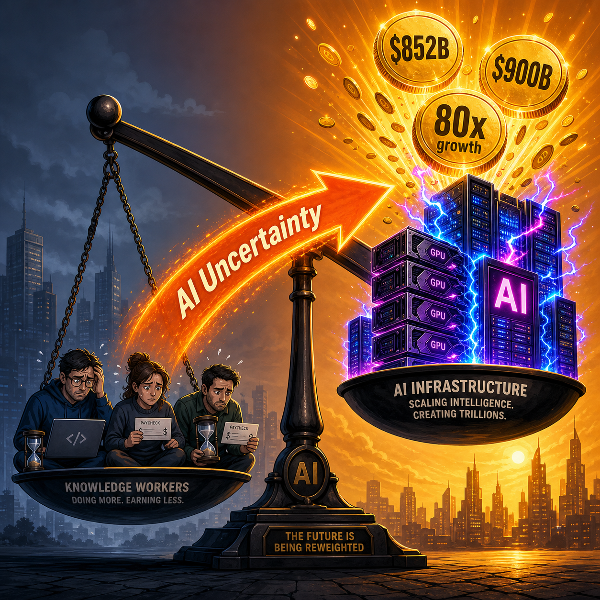

Cloudflare just laid off 1,100 people. Not because business is bad. Because AI usage inside the company is up 600 percent.
"Today's actions are not a cost-cutting exercise," the company said. "They are about defining how a world-class, high-growth company operates and creates value in the agentic AI era."
Translation: we found out AI can do more of the work, so we need fewer of you.
Same day. Different company. Match Group, the owner of Tinder and Hinge, announced it is slowing hiring. The reason is not a market downturn. The reason is that the company is redirecting payroll budget toward AI tools.
This is the AI jobs story everyone got wrong.
The Layoffs That Didn't Happen
For two years, the dominant narrative has been simple: AI is coming for your job. Mass layoffs. Robots at every desk. The end of knowledge work as we know it.
It hasn't happened. Not in the way predicted.
Unemployment in the United States remains near historic lows. The wave of AI-driven mass layoffs that futurists and pundits promised for 2025 and 2026 has not materialized as a single, catastrophic event. The robot didn't show up to take your desk.
But something else did.
Economic analysts are tracking a quieter pattern, one that doesn't make for clean headlines. Instead of mass layoffs, firms are reducing working hours. Instead of wholesale automation, they are compressing wages. Instead of replacing workers entirely, they are eroding bargaining power through something far more efficient than deployment: uncertainty.
Call it the "AI Uncertainty" effect. A company announces it is "evaluating AI solutions for [insert your department here]." Nobody gets fired. But nobody gets a big raise, either. Hiring slows down. Attrition runs its course unfilled.
The message to workers is clear: be grateful for what you have while we figure out if a model can do 30 percent of what you do. This mechanism works whether AI ever replaces anyone or not. The threat alone does the work.
There is a historical parallel here. Throughout the 1990s and 2000s, the mere threat of offshoring suppressed manufacturing wages in the United States. During union negotiations, management would casually leave brochures for foreign manufacturing facilities on the conference room table. The factories didn't need to actually move to China to extract concessions from workers. Employers simply weaponized the potential of a cheaper alternative.
The dynamic today is identical, except the "somewhere else" is not a country. It is a model.
Where the Money Is Actually Going
While knowledge workers are being told to tighten their belts, here is what is happening at the top of the food chain. Enterprise IT budgets are finite. When a company decides to deploy an enterprise AI suite or shifts millions into cloud compute to run internal models, that capital is pulled directly from the same pool historically reserved for merit increases and hiring.

On Monday and Tuesday, Dario Amodei took the stage at Anthropic's developer conference in San Francisco and dropped a number that should have been the headline everywhere. Anthropic, he said, had planned for roughly 10x growth this year. Instead, it is tracking toward 80x. Revenue run rate crossed $30 billion.
Anthropic's valuation is now reportedly approaching $900 billion. The company simultaneously locked in $200 billion in infrastructure commitments with Google Cloud and struck a separate compute deal with SpaceX involving 300 megawatts of capacity and over 220,000 GPUs.
OpenAI closed a $122 billion funding round on March 31 at an $852 billion valuation. This is the largest private funding round in history. Amazon put in $50 billion. SoftBank put in $30 billion. Nvidia put in $30 billion. The company's monthly revenue crossed $2 billion.
SpaceX, a rocket company, is planning a $119 billion chip fabrication plant in Texas called Terafab. Initial investment: $55 billion. The rocket company is building a fab because buying GPUs from existing suppliers has become too constrained, and Elon Musk's constellation of AI interests (xAI, X, and now SpaceX) needs silicon at a scale nobody's supply chain was built to handle.
In Beijing, Moonshot AI, the maker of the Kimi chatbot, just closed a $2 billion funding round at a $20 billion valuation. Led by Meituan. The company has gone from $4.3 billion to $20 billion in roughly six months.
DeepSeek, the Chinese lab that shattered Western assumptions about the cost of frontier AI, is reportedly targeting a $45 billion valuation in its first funding round.
Nvidia, Broadcom, and TSMC are all seeing revenue numbers that would have been unthinkable two years ago. Samsung hit a $1 trillion market cap on memory chips and HBM alone.
Goldman Sachs put it bluntly this week: AI infrastructure spending is now inflationary. It is simultaneously raising component costs, software subscription prices, and data center electricity bills. Every CIO who budgeted for "cloud AI" in 2025 is about to discover their 2026 spreadsheet is fiction.
The money isn't disappearing from the economy. It is being redirected upward at a rate and scale that has no precedent in the modern era.
The Two Economies
You are now living in two economies at once.
Economy 1: AI labs, chip fabs, data center operators, and cloud hyperscalers. Record funding. Record spending. Record valuations. A single company (Anthropic) can commit $200 billion in infrastructure spending like it is an annual software license renewal. A rocket company builds a fab. A memory chip company hits a trillion-dollar market cap. This economy is experiencing a boom that makes the dot-com era look restrained.
Economy 2: Knowledge workers across every industry. Flat wages. Reduced hours. Slower hiring. Management playing "wait and see" while they evaluate whether AI can automate chunks of their workforce. The Cloudflare layoffs are the clearest signal yet: AI adoption inside a company correlates directly with headcount reduction, and the companies doing it are not apologizing for it. They are calling it operational excellence.
Here is the part nobody wants to admit: these two economies are not separate. They are connected. The uncertainty in Economy 2 is what enables the boom in Economy 1.
Every time a company tells its workforce "we need to hold off on raises while we figure out this AI thing," the money that would have gone into wages flows upward to the companies that are building, selling, and operating the AI. Workers are financing their own disruption through suppressed pay. This is not replacement. It is redistribution.
The mechanism is elegant in its cruelty. You don't fire people and replace them with models. That would create backlash, headlines, political problems. Instead, you tell everyone you are "evaluating AI solutions." Wages stagnate. Hours get cut. Attrition runs its course. The savings accumulate.
The capital flows to the companies building the AI that justified the squeeze in the first place.
A closed loop. Workers pay for the thing that is being used to justify not paying them more.
The Backlash Indicators
The public is starting to do the math. A new poll out of New Jersey this week found that 56 percent of residents support local bans on AI data centers. This is not abstract anti-tech sentiment. It is people connecting AI infrastructure to real costs: rising energy bills, water consumption, grid strain.
Maryland's state government projected this week that the AI buildout will add $1.6 billion to residents' power bills. This is the direct line-item cost of the AI boom showing up on household utility statements. People who never use ChatGPT are paying to power the data centers that train it.
This is the pivot point. When the costs of AI infrastructure become visible on monthly utility bills, the conversation changes from "isn't AI cool?" to "who benefits and who pays?"
The answer, increasingly, is clear. The same people seeing flat wages and reduced hours are also seeing higher electricity costs to power the same AI that their employers are using as justification to hold down pay. It is a double squeeze, and it is just getting started.
The Slow Burn
The AI job apocalypse narrative was always too simple. The idea that AI would arrive, sweep through office buildings, and replace millions of workers in a single wave was always more cinematic than realistic. Real economic transformations are messier, slower, and harder to see while you are inside them.
What is actually happening is more insidious. Labor's share of productivity gains is eroding, and the mechanism is not deployment. It is uncertainty. Workers aren't being replaced. They are being squeezed. And the squeeze started before the replacement was even possible.
The Cloudflare layoffs and the Match Group hiring freeze are not exceptions. They are previews. Companies are discovering, in real time, that they don't need to fully automate a role to extract value from the threat of automation. They just need the uncertainty to be credible enough to justify smaller raises, fewer hours, and less bargaining power.
Meanwhile, the companies building the AI that creates this uncertainty are raising money at valuations that exceed the GDP of most countries and spending it on infrastructure with the same unit of measurement (billions) that governments use for defense budgets.
The concentration of capital at the infrastructure layer is not an accident. It is the point. Dario Amodei's 80x growth number is not just a brag. It is a signal. The money is flowing upward because the system is designed for it to flow upward.
The question nobody in San Francisco is asking out loud: what happens to everyone below the line while this happens?
We are about to find out.
Vinny Barreca writes about AI infrastructure, the hidden costs of the AI boom, and what it means for people who don't have $200 billion budgets. No hype. Just real analysis from someone watching the money move.
Get More Articles Like This
The AI economy is reshaping everything. I'm tracking where the money goes, who benefits, and what it means for the rest of us.
Subscribe to receive updates when we publish new content. No spam, just real analysis from the trenches.